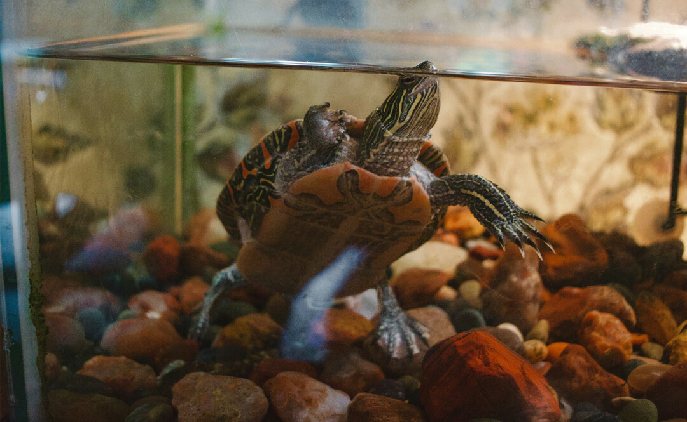

History
Racy D'Lenes Coffee Lounge was opened in 1993 in Eau Claire, Wisconsin. The coffee lounge, located a few blocks from the University of Wisconsin-Eau Claire, brought in many college students looking for a place to socialize and do homework. Aside from that, over the years Racy's has offered countless opportunities for local artists and musicians to showcase their work. In the mid 90's local bands would play evening concerts, and up until 2023 jazz students from the university held various "jazz jams" as well.
Another interesting feature of Racy's is Earl the painted green turtle. Earl has been a staple of the coffee shop since 2015, brought in by a former employee. Earl lives in a tank near the vintage couches in the front of the store, and enjoys poking his head up to say hello to staff, customers, and kids. Earl has definitely earned his spot as Racy's mascot, so come in, have a coffee, and say hi!
